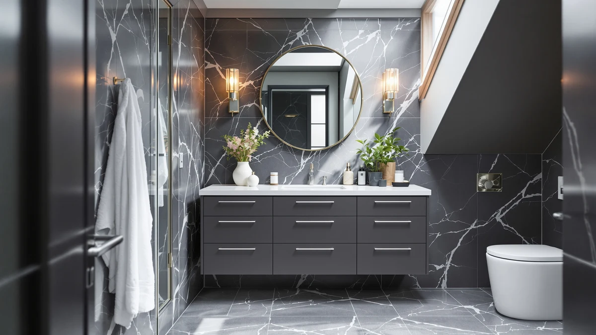

Best Paint for Bathroom Vanities: Complete Guide (2026)
Prices and picks verified as of September 2026. Independent, reader-supported reviews.


Things to Know Before You Buy
- Wall paint is not vanity paint. Flat and eggshell finishes stay soft and porous, so they absorb splashed water and lift at the seams within months. A vanity needs a paint built for hard, wet-contact surfaces.
- Bonding primer matters more than the topcoat brand. Laminate, thermofoil, and factory-sealed wood all resist adhesion. A bonding primer designed for slick surfaces is what keeps the finished coat from chipping off in sheets.
- Sheen decides how well it wipes clean. Satin and semi-gloss shed water and toothpaste with a wipe. Matte and flat sheens trap grime in their texture and are harder to keep looking new.
- Cure time is longer than dry time. Most cabinet enamels feel dry within a day but need three to four weeks to fully harden. Treat the vanity gently during that window or you risk soft, dentable paint.
- Prep work decides the outcome more than the paint you buy. Cleaning, deglossing, and sanding take the most time in any vanity paint job, and skipping them is the single biggest cause of early failure.
The best paint for bathroom vanities is a hybrid alkyd or acrylic enamel applied over a bonding primer, because ordinary wall paint softens and peels within months of contact with steam, toothpaste, and wet hands. Vanities take more daily abuse than almost any other painted surface in a home, and the paint has to survive that abuse in a room with poor ventilation and constant temperature swings.
We compared the formulas manufacturers market specifically for cabinets and trim against general-purpose wall paints, and the pattern holds across brands: products built for furniture and cabinetry cure to a harder film and resist water far longer than anything labeled for walls and ceilings. Owners who post before-and-after photos online report the same failures over and over when they skip a bonding primer or reach for leftover wall paint out of convenience.
What separates a paint job that survives five years from one that peels within a season comes down to a handful of specifics: the main paint categories, how to match a sheen and formula to your existing vanity surface, the prep mistakes that cause most failures, and how to care for a freshly painted vanity while it cures.
What You Need to Know
Bathroom vanities sit in one of the harshest environments in a house for paint. Steam from showers condenses on cabinet doors, water drips from wet hands after every sink use, and cleaning sprays hit the surface several times a week. Any paint you choose has to resist all three without softening or discoloring.
The best paint for bathroom vanities solves this with chemistry, not color choice. Hybrid acrylic-alkyd enamels and true oil-based alkyds cure into a hard, plastic-like film that sheds water instead of absorbing it. Standard latex wall paint, by contrast, stays flexible and slightly porous even after it dries, which is fine for a bedroom wall but a liability six inches from a sink.
Sheen plays almost as large a role as formula. Satin and semi-gloss finishes have less surface texture for grime to catch on, so a damp cloth wipes them clean in seconds. A flat or matte finish on a vanity looks soft and modern in photos, but fingerprints, toothpaste flecks, and water spots build up faster and resist an easy wipe.
The surface underneath the paint also changes your approach. Solid wood accepts paint readily once it is sanded and cleaned. Laminate, thermofoil, and melamine are slicker and repel adhesion, so they need a dedicated bonding primer rather than a standard drywall primer. Skip that step on a slick surface and even the best enamel will lift within weeks.
Types and Categories
Cabinet and trim enamels make up the category most owners land on for a vanity. These water-based hybrids blend acrylic resin with alkyd technology, giving you the easy cleanup of a water-based paint with a cured hardness close to oil-based paint. They self-level well with a brush, resist yellowing, and dry with low odor, which matters in a small bathroom with limited airflow.
True oil-based alkyd enamels remain the toughest option on paper. They cure to an extremely hard, glass-like film that shrugs off water and scuffs. The tradeoff is strong fumes during application, a longer dry time between coats, and mineral spirits for cleanup, so most owners in a small unventilated bathroom skip them in favor of the hybrid formulas above.
Chalk and mineral paints appeal to owners chasing a farmhouse or vintage look, and they cover old finishes without much sanding. On their own, though, they are too porous for a wet environment. Reviewers consistently note that a chalk-painted vanity needs a clear polyurethane or polycrylic topcoat to survive daily splashes, which adds a step most other categories skip.
Spray-applied lacquers give the smoothest, most factory-like result and explain why pre-finished vanities look so uniform out of the box. They require a sprayer, a ventilated space away from the bathroom, and more setup than a brush-and-roller job, so most owners reserve them for a vanity door removed and painted in a garage rather than in place.
How to Choose
Start with what is already on your vanity. A solid wood or previously painted surface takes a standard bonding primer and almost any cabinet enamel without drama. A laminate, thermofoil, or high-gloss factory finish needs a primer formulated for slick surfaces, since a regular primer beads up or fails to grip and the topcoat follows it off the cabinet within weeks.
Match the sheen to how the bathroom actually gets used. A guest bathroom that sees light traffic can carry a soft satin finish without much fuss. A kids' or primary bathroom with daily splashes and cleaning does better with semi-gloss, since the harder, glossier film resists water and wipes clean faster, even though it shows more surface imperfections underneath.
Check the room for ventilation before you commit to a formula. A bathroom with a working exhaust fan and a window can handle a hybrid enamel's low-odor cure without much disruption. A windowless bathroom with a weak fan calls for extra dry time between coats and rules out strong oil-based alkyds unless you can prop the door open and run a fan for hours.
Factor in your tools and patience along with the paint itself. A brush-and-roller application from a quart of hybrid enamel costs under $40 in materials and fits a weekend, while a sprayed lacquer finish looks closer to a factory result but demands removing doors, a ventilated space, and more setup time. Neither is wrong. The right choice depends on how much of a factory look you need versus how much time you have.
Budget for two coats minimum regardless of which paint you choose. A single coat rarely hides the old color evenly, and manufacturers formulate their coverage numbers and durability claims around a two-coat application, not one.
Common Mistakes to Avoid
The most common mistake is skipping the sanding step because the surface looks clean. Grease, hand oils, and factory sealants sit on a vanity even after a wipe-down, and paint bonds poorly over that residue. A quick scuff with 220-grit sandpaper, followed by a clean rag, gives the primer a surface it can actually grip.
The second mistake is using a standard wall or ceiling primer on a laminate or thermofoil vanity. These slick, factory-sealed surfaces need a bonding primer designed for glossy materials. A regular primer looks fine on day one and then lifts in sheets within a month, taking the topcoat with it.
The third mistake is reaching for leftover wall paint because it is already in the garage. Flat and eggshell wall paints never fully harden the way a cabinet enamel does, so they stay soft to the touch and absorb water at the seams around the sink and hinges.
The fourth mistake is rushing the cure schedule. A vanity can feel dry to the touch within hours, but the film keeps hardening for three to four weeks. Setting a heavy soap dispenser on the surface or wiping it aggressively during that window presses marks into paint that has not fully cured, and those marks do not sand out easily later.
Care and Maintenance
Once a painted vanity fully cures, care stays simple. Wipe spills and water spots with a soft, damp cloth rather than letting them sit, since standing water at the seams is what eventually works its way under even a well-bonded paint film. A mild dish soap handles most daily grime without stripping the sheen.
Skip abrasive sponges, scouring powders, and strong solvent-based cleaners on painted cabinetry. These dull the sheen and can etch fine scratches into an enamel finish over time, even one rated for durability. A microfiber cloth removes toothpaste and soap residue without that risk.
Keep a small amount of the original paint on hand for touch-ups. A dropped bottle or a scraped corner is far easier to fix with a matching dab from the original can than with a full repaint later, and the color match only stays reliable if you keep the leftover paint sealed and labeled with the date.
Reseal high-contact edges, like the area around the sink cutout, with a thin bead of clear caulk if you notice the paint separating from the countertop over time. That gap is where water collects fastest, and closing it protects the rest of the finish from the inside out.
Our Top Picks
Not every bathroom needs a paint project. If your vanity is beyond saving, or you would rather put your time into research than into sanding, these three picks cover a pre-finished upgrade at two price points plus a beginner-friendly resource for anyone tackling the cabinet work themselves.

Editor’s Pick
30 Inch Bathroom Vanity with
A factory-sealed finish gives you the durability of a well-painted vanity without picking up a brush, at a compact size that fits most single-sink bathrooms.
$215.99
Check Price on Amazon
Best Value
DIY CABINET BUILDING FOR BEGINNERS:
A practical primer for anyone planning to build, repair, or refinish cabinetry alongside a paint job, at a fraction of the cost of hiring the prep work out.
$14.45
Check Price on Amazon
Premium Choice
Tribesigns 36" Bathroom Vanity with
A larger 36-inch footprint and a premium factory finish make this the pick for a primary bathroom remodel where you want a finished look on day one.
$356.02
Check Price on AmazonWhat kind of paint works best on a bathroom vanity?
A hybrid alkyd or acrylic enamel in satin or semi-gloss is the best paint for bathroom vanities, since it cures to a hard, wipeable surface that resists moisture.
Do I need to sand a vanity before painting it?
Yes.
Frequently Asked Questions
What kind of paint works best on a bathroom vanity?
A hybrid alkyd or acrylic enamel in satin or semi-gloss is the best paint for bathroom vanities, since it cures to a hard, wipeable surface that resists moisture. Flat or eggshell wall paint stays soft and absorbs water at the seams, so it fails fast on a vanity.
Do I need to sand a vanity before painting it?
Yes. Scuff-sanding the existing finish with 220-grit paper and wiping away the dust gives the primer something to grip. Skipping this step is the top reason painted vanities chip and peel within the first year.
How long should vanity paint cure before you use the bathroom normally?
Most cabinet enamels are dry to the touch within a day but need 21 to 30 days to fully cure. Wipe the surface gently during that window and hold off on heavy cleaning, stacked toiletries, or steady water contact until the paint hardens completely.
Can you paint a laminate or thermofoil vanity?
You can, but only with a bonding primer formulated for slick, glossy surfaces. A standard wall primer will not adhere to laminate or thermofoil, and the topcoat will lift within weeks no matter how good the paint itself is.
Is a paint sprayer better than a brush and roller for a vanity?
A sprayer gives you the smoothest, most factory-like finish, but it needs a ventilated space away from the bathroom and more setup time, including removing doors and drawer fronts. A quality brush and mini foam roller deliver a solid finish in place and suit most weekend projects better.
Verdict
Choosing the best paint for bathroom vanities comes down to matching the formula to the environment: a hybrid alkyd or acrylic enamel in satin or semi-gloss, applied over a bonding primer suited to your existing surface. Skip flat wall paint, respect the full cure time, and put your effort into prep rather than the topcoat, since sanding and priming decide whether the job lasts five years or five months.
If a paint project is not worth the weekend, a pre-finished vanity gets you the same durable, wipeable surface without the sanding and cure schedule. The Mirightone 30-inch vanity above is a straightforward starting point for most single-sink bathrooms, with a factory-sealed finish that holds up the same way a well-painted vanity does, minus the brush.